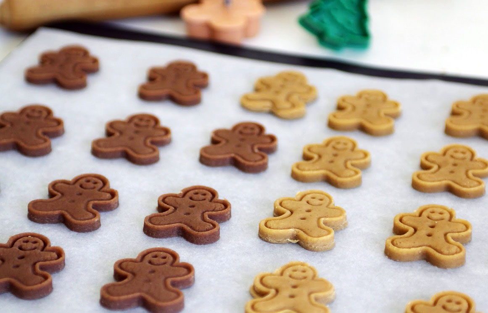

Сладкая выпечка, приправленная имбирем, известна со времен средневековья, но имбирное печенье впервые упоминается лишь в XIX веке.
Имбирное печенье может быть хрустящим или немного тягучим, причем оба варианта можно испечь из одного и того же теста, достаточно изменить толщину раскатки теста и/или время выпечки.
Помимо имбиря в печенье часто добавляют другие специи: кардамон, корицу, гвоздику.
В зависимости от вашего желания, этих специй может быть больше или меньше, соответственно, и печенье будет либо имбирным, либо более похожим на пряник.
Кстати, печенье с молотым сухим имбирем очень отличается от печенья, в который добавлен натертый свежий.
Вместо обычного белого сахара в имбирном печенье используют мед и коричневый сахар. Оба продукта не только придают печенью особый вкус, но и благоприятно влияют на срок его хранения.
Однако нельзя забывать, что изделия с медом довольно быстро пригорают, поэтому нужно внимательно следить за ходом выпечки.
Имбирное печенье принято печь на Рождество и Новый Год, но на Пасху оно так же будет уместным.
Можно расписать имбирное печенье белой или цветной глазурью, украсить съедобными бусинами и всевозможными посыпками. Благодаря большому сроку хранения, имбирное печенье – прекрасный подарок.
ИНГРЕДИЕНТЫ
- мука пшеничная – 200 г;
- масло сливочное – 100 г;
- сахар тростниковый – 70 г;
- яйцо – 1 шт;
- мед – 3 ч.л;
- сода –почти полная 1 ч.л
- корица – 1 ч.л;
- кардамон – 1 ч.л;
- имбирь сушеный молотый – 2 ч.л;
- гвоздика – ½ ч.л

ПОШАГОВЫЙ РЕЦЕПТ ПРИГОТОВЛЕНИЯ
Шаг 1
Приготовьте тесто. В отдельную емкость сложите мед, сахар и сливочное масло. Поставьте на водяную баню и прогрейте, постоянно помешивая, до полного растворения сахара. Смесь при этом не должна кипеть.
Шаг 2
Когда сахар растворится, добавьте все пряности, какао-порошок, апельсиновую и лимонную цедру. Перемешайте и снимите емкость с водяной бани, дайте смеси остыть до температуры не ниже +68°С (горячая, но не обжигающая смесь).
Шаг 3
В другую емкость просейте муку, разрыхлитель и соль. Когда смесь немного остынет, всыпьте часть муки и тщательно вымесите тесто. Снова немного остудите, а затем добавьте желтки, ром и хорошо вымесите тесто руками. Не нужно стремиться вмешать всю муку. Тесто должно получиться плотным и эластичным. Оно будет слегка липким. Соберите тесто в шар, заверните в пищевую пленку и уберите в холодильник на 6-8 часов.
Шаг 4
Разогрейте духовку до 220-240°С. Большой прямоугольный противень застелите бумагой для выпечки.
Шаг 5
Раскатайте тесто в пласт толщиной 3-5 мм на рабочем столе, присыпанном мукой. Вырежьте из теста фигурки, используя формочки для печений. Переложите фигурки на противень. Или же раскатайте тесто на противне, вырежьте фигурки, а затем удалите с противня излишки теста.
Шаг 6
Выпекайте печенье в разогретой духовке в течение 7-9 минут. Будьте внимательны, не пересушите. Имбирное печенье (как и пряники) не становится плотным и хрустящим во время выпечки. Если печенье слегка поднялось и подрумянилось с краев, оно готово.
Шаг 7
Достаньте противень из духовки. Дайте печенью остыть, а затем снимите его и разложите в один слой на ровной поверхности, чтобы оно не деформировалось. Если готовое печенье немного растеклось по краям во время выпечки, срежьте неровности ножом, пока печенье теплое.